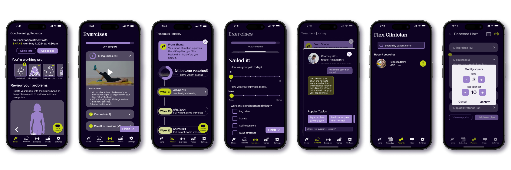

Flex
Scope: Zero-to-one iOS app concept
Time: January - May 2024
In 2019-2020, almost 1 in 10 individuals aged 25 - 64 received physical, speech, rehabilitative or occupational therapy. Flex is designed to empower patients in their treatment journey and address a critical need in care by fostering communication and engagement between them and their healthcare providers.
As a designer with a clinical research background and a passion for design in healthcare, I developed Flex to provide real-time feedback, transparent communication, and personalized exercise plans for use between clinical appointments.The app serves as a comprehensive tracking & communication tool, supporting patients in adhering to their treatment plans and facilitating collaboration with their healthcare team.
Flex aims to instill a sense of ownership and motivation in patients, ensuring they feel empowered and supported during recovery. This project not only benefits patients but also enhances the workflow and effectiveness of medical providers by offering a clear and cohesive approach to patient management.
- Discover - brainstorming, desk research (analogous/competitor audits), generative interviews
- Define - Interview synthesis, derive insights & HMWs, sketching, journey map, low-fi prototyping & user testing
- Develop - Mid-fi prototyping, user testing, feature prioritization
- Deliver - Branding, system map, hi-fi prototyping
Goals:
- Identify key problem areas in physical therapy patient journey
- Create a brand & MVP to solve problems faced by users
- Produce a high-fidelity prototype with ideal user flows to show scope of product
Discover:
brainstorming, desk research, (analagous/competitor audits), generative interviewsBrainstorming to identify areas of interest within the topic - who/what/where of PT motivation & recovery.
Research plan was to interview with former/current PT patients and physicians/physical therapists if possible.